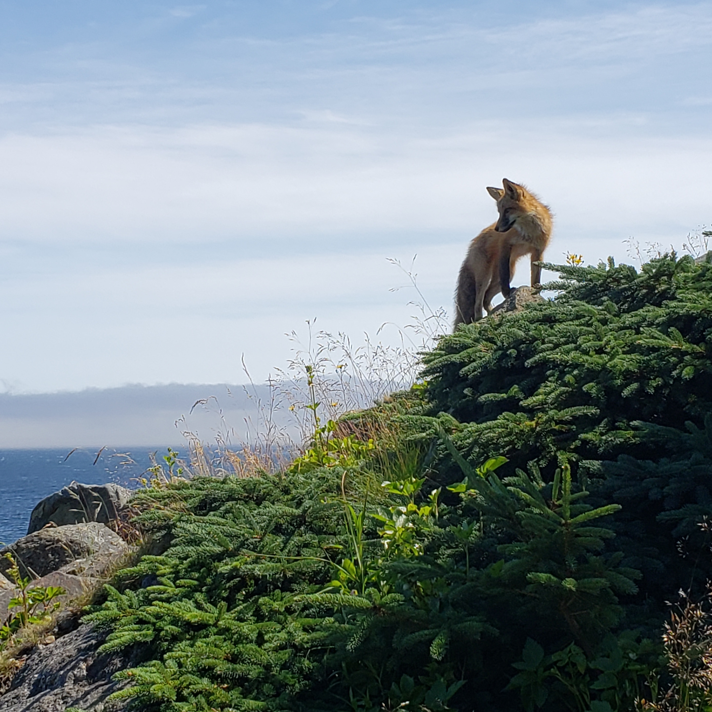
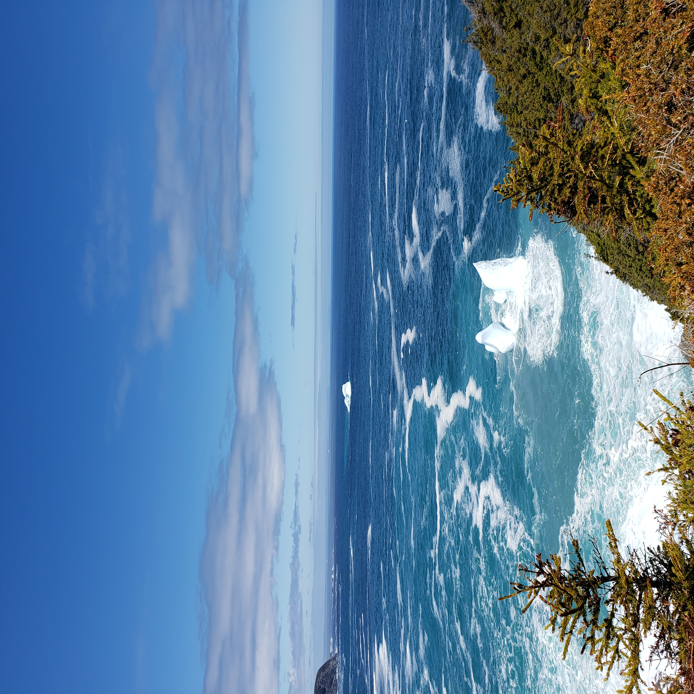
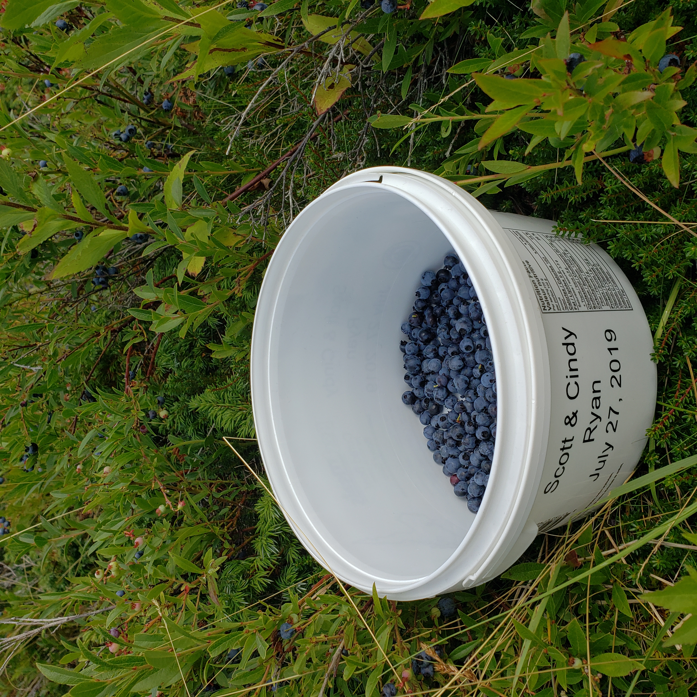

About
This site will help you decide which path of the East Coast Trail to hike. You can select from features including trail length, trail difficulty, and distance from where you are to the trail head to get path suggestions. You can also create an account to create a trail diary and keep track of your hikes.



